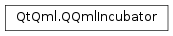

QQmlIncubator¶
Synopsis¶
Functions¶
- def
clear() - def
errors() - def
forceCompletion() - def
incubationMode() - def
isError() - def
isLoading() - def
isNull() - def
isReady() - def
object() - def
status()
Virtual functions¶
- def
setInitialState(arg__1) - def
statusChanged(arg__1)
Detailed Description¶
-
class
PySide2.QtQml.QQmlIncubator([arg__1=Asynchronous])¶ Parameters: arg__1 – PySide2.QtQml.QQmlIncubator.IncubationMode
-
PySide2.QtQml.QQmlIncubator.IncubationMode¶
-
PySide2.QtQml.QQmlIncubator.Status¶
-
PySide2.QtQml.QQmlIncubator.clear()¶
-
PySide2.QtQml.QQmlIncubator.errors()¶ Return type:
-
PySide2.QtQml.QQmlIncubator.forceCompletion()¶
-
PySide2.QtQml.QQmlIncubator.incubationMode()¶ Return type: PySide2.QtQml.QQmlIncubator.IncubationMode
-
PySide2.QtQml.QQmlIncubator.isError()¶ Return type: PySide2.QtCore.bool
-
PySide2.QtQml.QQmlIncubator.isLoading()¶ Return type: PySide2.QtCore.bool
-
PySide2.QtQml.QQmlIncubator.isNull()¶ Return type: PySide2.QtCore.bool
-
PySide2.QtQml.QQmlIncubator.isReady()¶ Return type: PySide2.QtCore.bool
-
PySide2.QtQml.QQmlIncubator.object()¶ Return type: PySide2.QtCore.QObject
-
PySide2.QtQml.QQmlIncubator.setInitialState(arg__1)¶ Parameters: arg__1 – PySide2.QtCore.QObject
-
PySide2.QtQml.QQmlIncubator.status()¶ Return type: PySide2.QtQml.QQmlIncubator.Status
-
PySide2.QtQml.QQmlIncubator.statusChanged(arg__1)¶ Parameters: arg__1 – PySide2.QtQml.QQmlIncubator.Status
© 2018 The Qt Company Ltd. Documentation contributions included herein are the copyrights of their respective owners. The documentation provided herein is licensed under the terms of the GNU Free Documentation License version 1.3 as published by the Free Software Foundation. Qt and respective logos are trademarks of The Qt Company Ltd. in Finland and/or other countries worldwide. All other trademarks are property of their respective owners.